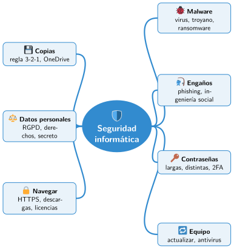

Bloque IV · Multimedia, comunicación y seguridad
UD09 Seguridad informática
Unidad transversalLa seguridad no tiene un resultado de aprendizaje propio en la programación: se aplica en todos los programas del módulo. En esta unidad se trabajan estos criterios de otros resultados.


Sesiones
- Sesión 9.1 Las amenazas: malware y engaños
- Sesión 9.2 Protegerse: contraseñas, actualizaciones y copias
- Sesión 9.3 Protección de datos y navegación segura
Al terminar la unidad
- 🛠️ Práctica con las herramientas
- 📝 Repaso de la unidad
- ✅ Autoevaluación
- 🎯 Situaciones de aprendizaje del bloque
Mapa mental de la unidad

✏️ Repasa la unidad con el mapa: tapa una rama y explica en voz alta lo que pone.